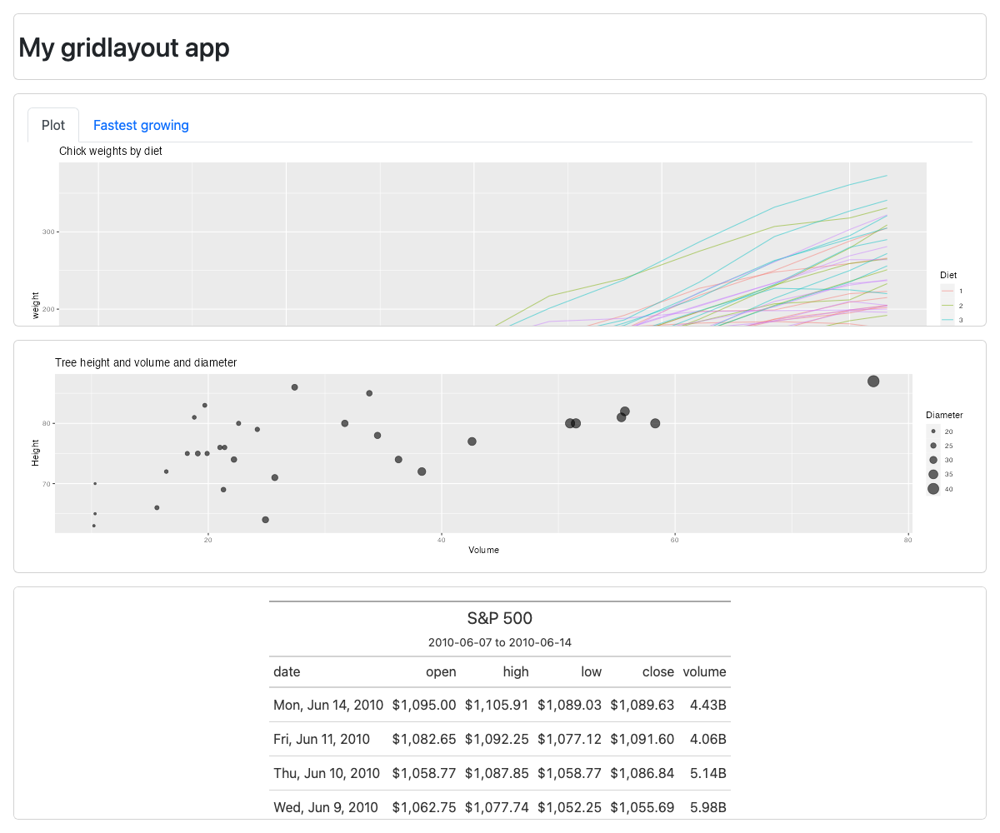
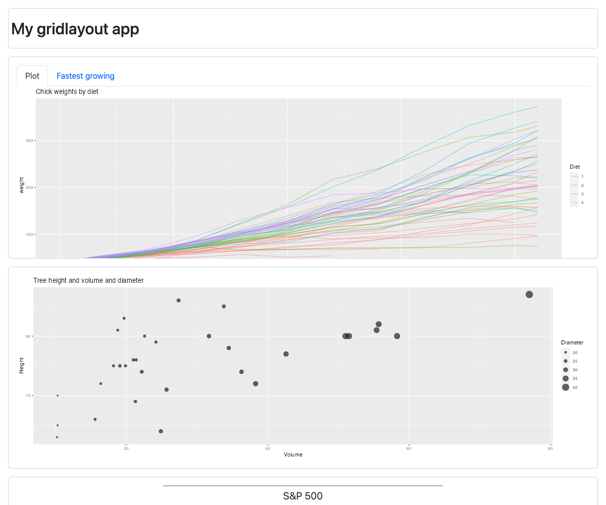

layout-examples.RmdThe gridlayout package lets you quickly define a grid-based layout that can drastically alter the appearance of an app without changing the ui markup at all. The following are all screenshots from the same app with different layout definitions.
This list is inspired by the flexdashboard layouts vignette.
The following code is the UI definition used for all the screenshots. The only thing that changes is the layout definition.
ui <- grid_page(
layout = my_layout,
header = title_panel("My gridlayout app"),
chickens = tabsetPanel(
tabPanel("Plot", plotOutput("chickPlot", height = "100%")),
tabPanel("Fastest growing", gt_output("chickTable"))
),
treePlot = plotOutput("treePlot", height = "100%"),
yarnPlot = plotOutput("yarnPlot", height = "100%"),
stockTable = grid_panel(
gt_output("stockTable"), scrollable = TRUE
),
# Allows us to use layouts without some elements declared
flag_mismatches = FALSE
)The only slightly wonky thing here is the setting of flag_mismatches to FALSE. This just disables the checks that makes sure elements declared in layout match those in the ui definition. Here we sometimes don’t include the stockTable element in our layout.
While it’s not important, for the demo’s here, the whole app code is provided at the end of this document if you want to copy each layout and try yourself.
my_layout <- new_gridlayout("
| | |
|------|---------|
|1rem |1fr |
|80px |header |
|1fr |chickens |
|1fr |treePlot |
|1fr |yarnPlot |") 
Note the use of all definite sizes (e.g. no fr or auto units) for row heights.
my_layout <- new_gridlayout("
| | |
|------|-----------|
|1rem |1fr |
|80px |header |
|400px |chickens |
|400px |treePlot |
|400px |yarnPlot |
|400px |stockTable |") 
my_layout <- new_gridlayout("
| | | |
|-----|-----------|---------|
|1rem |1fr |1fr |
|80px |header |header |
|1fr |chickens |yarnPlot |
|1fr |stockTable |treePlot |") The following is the function used to generate the apps shown above. Simply pass your layout of interest as an argument (or unwrap from the function entirely.)
library(gridlayout)
library(shiny)
library(ggplot2)
library(gt)
library(dplyr)
app_w_layout <- function(my_layout) {
shinyApp(
ui = grid_page(
layout = my_layout,
header = title_panel("My gridlayout app"),
chickens = tabsetPanel(
tabPanel("Plot", plotOutput("chickPlot", height = "100%")),
tabPanel("Fastest growing", gt_output("chickTable"))
),
treePlot = plotOutput("treePlot", height = "100%"),
yarnPlot = plotOutput("yarnPlot", height = "100%"),
stockTable = grid_panel(
gt_output("stockTable"), scrollable = TRUE
),
flag_mismatches = FALSE # Allows us to use layouts without some elements declared
),
server = function(input, output) {
output$chickPlot <- renderPlot({
ggplot(
ChickWeight,
aes(
x = Time,
y = weight,
group = Chick,
color = Diet
)
) +
geom_line(alpha = 0.5) +
ggtitle("Chick weights by diet")
})
output$chickTable <- render_gt({
ChickWeight %>%
group_by(Chick) %>%
summarise(
`Diet` = first(Diet),
`start weight` = first(weight),
`end weight` = last(weight),
`weight change rate` = (last(weight) - first(weight)) / last(Time)
) %>%
arrange(desc(`weight change rate`)) %>%
head(8) %>%
gt() %>%
tab_header(
title = "8 fastest growing chicks"
) %>%
fmt_number(
columns = c(`start weight`,`end weight`),
pattern = "{x}<sub>g</sub>",
decimals = 1
) %>%
fmt_number(
columns = c(`weight change rate`),
pattern = "{x}<sub>g/day</sub>",
decimals = 2
)
},
height = "100%",
width = "100%")
output$treePlot <- renderPlot({
ggplot(
trees,
aes(y = Height, x = Volume, size = Girth*2)
) +
geom_point(alpha = 0.6) +
scale_radius() +
labs(
title = "Tree height and volume and diameter",
size = "Diameter"
)
})
output$yarnPlot <- renderPlot({
ggplot(
warpbreaks,
aes(x = breaks, fill = wool)
) +
geom_dotplot(binwidth = 1, method = "histodot") +
facet_grid(tension ~ .) +
scale_y_continuous(NULL, breaks = NULL) +
ggtitle("Breaks in different yarns by tension")
})
output$stockTable <- render_gt({
# Define the start and end dates for the data range
start_date <- "2010-06-07"
end_date <- "2010-06-14"
# Create a gt table based on preprocessed
# `sp500` table data
sp500 %>%
filter(date >= start_date & date <= end_date) %>%
select(-adj_close) %>%
gt() %>%
tab_header(
title = "S&P 500",
subtitle = glue::glue("{start_date} to {end_date}")
) %>%
fmt_date(
columns = date,
date_style = 3
) %>%
fmt_currency(
columns = c(open, high, low, close),
currency = "USD"
) %>%
fmt_number(
columns = volume,
suffixing = TRUE
)
},
height = "100%",
width = "100%")
}
)
}